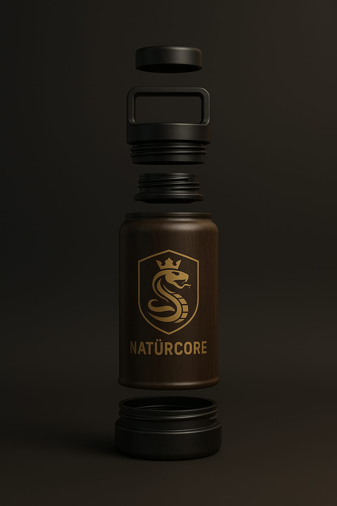

Conheça a garrafa ecológica que une bioplástico, fibras naturais e madeira reciclada
Descubra o produtoDesenvolvida com foco em sustentabilidade, a NATÜRCORE é perfeita para quem valoriza design, durabilidade e respeito ao meio ambiente.
Cada camada tem uma função específica para manter a temperatura e preservar o sabor do seu líquido preferido.
Quer ser um distribuidor, parceiro ou comprar a sua? Preencha o formulário ou entre em contato pelo WhatsApp!
Chamar no WhatsApp